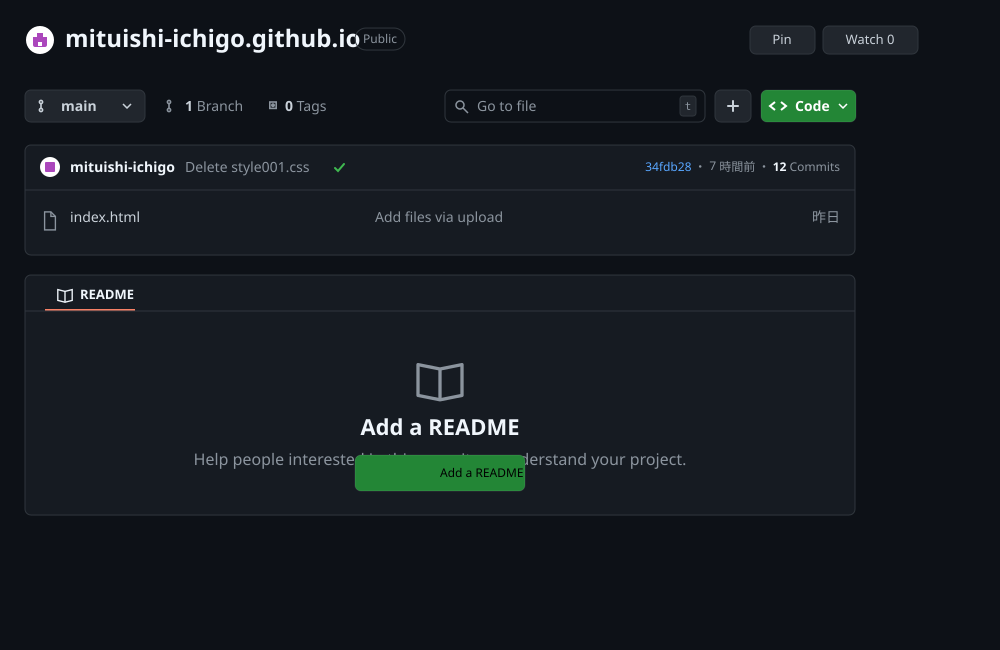
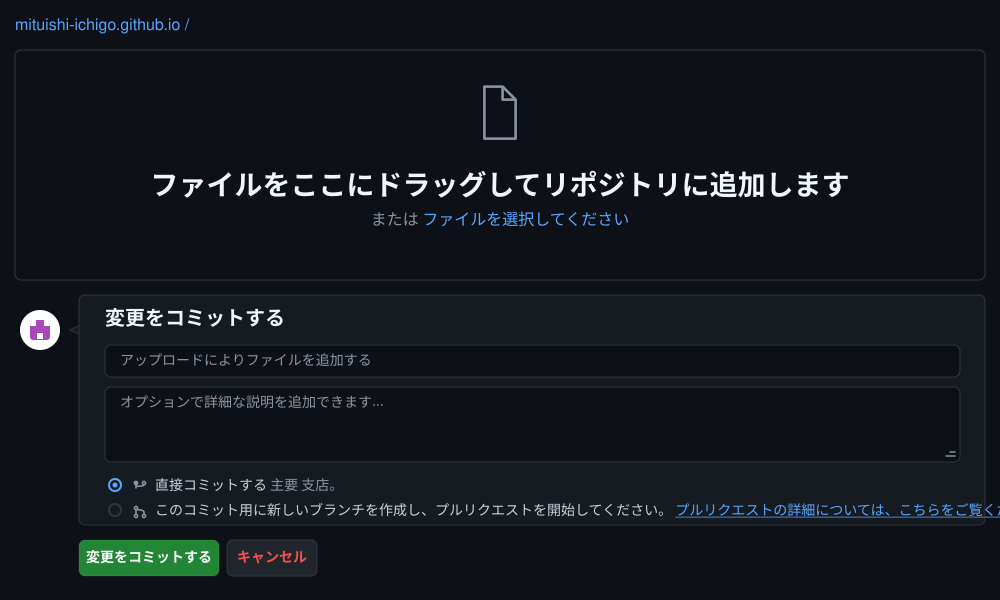

githubにファイルを追加 の手順
以下の手順で GitHub Pages にファイルを追加します。
1. GitHub に登録したリポジトリを開きます
ファイルを追加するには「＋」をクリックします。

「＋」をクリックすると、
＋Create new file
↑Upload files
↑Upload files
という選択肢が出てきます。
「↑Upload files」をクリックしてください。
下のような画面が表示されます。

あなたのパソコンのフォルダからファイルをドラッグ＆ドロップしてください。
複数追加することもできます。
コミットする
最後に「コミットする」をクリックしてください。